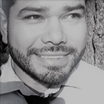

COME JOIN US AND CELEBRATE DEAF CULTURE!
DeafThrive Day is a family friendly festival that brings the Deaf community together to celebrate being Deaf, and to show Seattle that we are happy, healthy, and thriving!
DeafThrive Day is on Saturday, September 21st, 2019 and will run from 1:00pm to 6:00pm. The event will have speeches from leaders and ASL performances on stage. Volunteers from Deaf organizations will coordinate kids play activities in between speeches and performances.
Deaf organizations will have booths to share information about themselves to the community. Mobile Greeters will walk around and share fun sign language words to the non-signing attendees. Come join us and see what we have to offer as we continue to thrive here in Seattle!
To learn more, please check out our FAQ for Attendees
SCHEDULED PERFORMERS
Come and see this fantastic line-up!
-
Dack Virnig
Born and raised in Minnesota, Dack Virnig is the fourth-generation Deaf family. He credits his Mom for his storytelling passion with her numerous of fairy tales and her beautiful signs. This passion lead to his first ASL contest, where he placed first. That is when his imagination suddenly emerged and lead to his involvement with High School dramas, five performances for Rochester Institute of Technology and eventually a deaf movie.
DackCube Entertainment was an outgrowth of his YouTube fan base who encouraged him to inspire the world with how awesome and beautiful ASL can be. Since then Dack has performed at universities, deaf schools and numerous deaf events where he shares his rich experience in ASL. -
Urban Jazz Dance Company
Guests: Antoine Hunter and Zahna Simon
Founded in 2007, a Deaf dancer and choreographer, Anotoine Hunter, lead the Urban Jazz Dance Company (UJDC). Their mission is to provide opportunities for Deaf and other-abled artists to contribute to the arts and larger society, increasing awareness around Deaf issues via the performing arts. Featuring the syncopation of urban jazz rhythms, the company values the importance of play and performance to connect cultures of all races, ages, abilities, and backgrounds. UJDC performs all over the Bay Area and beyond, including at festivals, such as at the John F. Kennedy Center for the Performing Arts, Black Choreographers Festival, CubaCaribe Festival, Art and Soul Festival, Oregon Shakespeare Festival's Green Show, and the Ethnic Dance Festival. Its programs thrill Deaf and Hearing audiences alike. UJDC is also the producer of the annual Bay Area International Deaf Dance Festival and views Deafness as a human experience with its own values, principles, and cultural norms – not a disability. -
Hands Regeneration
GENRE: Dance/Movement
TYPE: Japanese - Butoh
CHOREOGRAPHER: Monique Holt
PERFORMERS: TBD
BIO: Monique Holt, Choreographer.
She studied Butoh with Naoko Maeshiba (Min Tanaka of Body Weather Farm). She also studied with Jerry Gardner (Kazuo Ohno School). She choreographed a piece: “Translucent” for New York Deaf Theatre’s Movement Festival. She performed a solo piece: “The Will” for Dartmouth College at Sphere Gallery.
EVENT EMCEES
Our event EMCEES will entertain you!
-

Christian Vasquez
My parents came to America from El Salvador for different reasons. I am thankful for my parents' decision to make this transformative decision that changed my life forever. I was born in Los Angeles, CA during the times with the infamous LA riot caused by death of Rodney King. That spurred a move to Seattle, WA. I graduated from Gallaudet University in Washington DC with a BA degree in American Sign Language (ASL). I am a translator, ambassador, editor, actor, writer, ASL instructor, guidance counselor for youth, and nursing mentor and among many others.
-
Perseus McDaniel
Perseus McDaniel is excited to perform as one of Deaf Thrive Day’s Master of Ceremonies! He is well known and talented American Sign Language (ASL) signer, and acted various ASL shows and events for many years since he was 9 years old. He is a native of Seattle, Washington. He lived on the east coast and pursued his acting career and a college degree. He participated a variety of theatres and received certification in Leadership Training in Theatre Arts for Deaf and Hard of Hearing People of Color (Washington, D.C., 2017). He wishes to thank his friends and family who show faith and support him to chase his dreams.
HOW TO GET TO CAL ANDERSON PARK
Cal Anderson is located in Seattle's Capitol Hill neighborhood and is the hub of the community. Cal Anderson Park includes a fountain, texture pool and reflecting pool, promenade paths, landscaping, a shelterhouse, a plaza, a children's play area, a wading pool, a lighted sports field, and a number of oversize chess boards.
This open park invites walking, sitting, reading, contemplation, informal sports in the meadow, and organized sports on the athletic field. The park is owned by the City of Seattle and operated by Seattle Parks and Recreation.
Address: 1635 11th Ave., Seattle, WA 98122